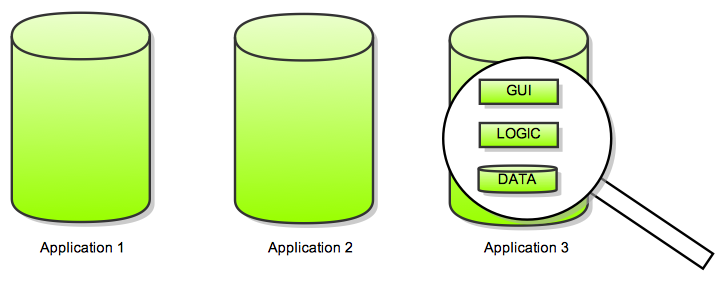
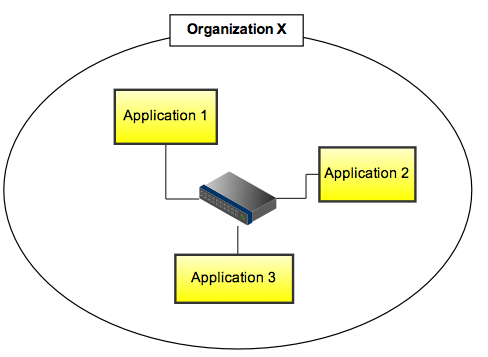
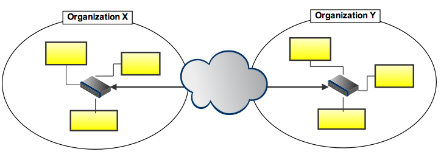
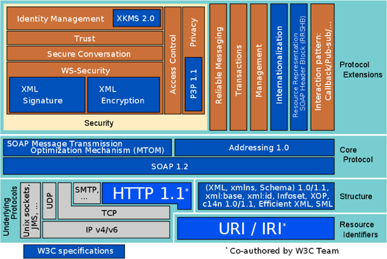

Styles, Technologies and Applications
Cyril Rohr (IRISA - Equipe Myriads)
Feb 4, 2010
Complete, closed, monolithic applications
Integration across application boundaries
Integration across organizational boundaries
Term is often a catch-all for “services accessible on the web”
W3C
a “web service” is “a software system designed to support interoperable machine-to-machine interaction over a network. It has an interface described in a machine-processable format (specifically Web Services Description Language WSDL). Other systems interact with the web service in a manner prescribed by its description using SOAP messages, typically conveyed using HTTP with an XML serialization in conjunction with other web-related standards.”
Web Services (WS) are just one of the technologies available to create distributed architectures. A software service may, but need not be exposed as a Web Service.
Most often implemented using the WS-* stack 
Web Services is a specific set of technologies for exposing Software Services:
Java method:
public void myMethod(int x, float y);
<message name="myMethodRequest">
<part name="x" type="xsd:int"/>
<part name="y" type="xsd:float"/>
</message>
<message name="empty"/>
<portType name="PT">
<operation name="myMethod">
<input message="myMethodRequest"/>
<output message="empty"/>
</operation>
</portType>
<binding .../>
POST /service
<?xml version="1.0"?>
<soap:Envelope xmlns:soap="http://www.w3.org/2001/12/soap-envelope" soap:encodingStyle="http://www.w3.org/2001/12/soap-encoding">
<soap:Header>
...
</soap:Header>
<soap:Body>
<myMethod>
<x xsi:type="xsd:int">5</x>
<y xsi:type="xsd:float">5.0</y>
</myMethod>
</soap:Body>
</soap:Envelope>Complex, ever-changing specification

WS-Security, WS-Policy, WS-SecurityPolicy, WS-PolicyAssertions, WS-PolicyAttachment, WS-Trust, WS-Privacy, WS-Routing, WS-Referral, WS-Coordination, WS-Transaction, WS-SecureConversation, WS-Federation, WS-Authorization, WS-Attachments, WS-Transfer, WS-ResourceTransfer, WS-ReliableMessaging, WS-Addressing, …
However, some advanced specs may be of interest (Security, QoS) if your environment requires it.
Representational State Transfer, in Architectural Styles and the Design of Network-based Software Architectures Roy T. Fielding (2000)
The REST Web is the subset of the WWW (based on HTTP) in which agents provide uniform interface semantics – essentially create (POST), retrieve (GET), update (PUT) and delete (DELETE) – rather than arbitrary or application-specific interfaces, and manipulate resources only by the exchange of representations. Furthermore, the REST interactions are ”stateless” in the sense that the meaning of a message does not depend on the state of the conversation.
Functionalities offered by the service are exposed under the form of resources (e.g. jobs, users, payments, orders, friends…)
A resource can be anything that has identity (RFC 2396)
Real objects (user, site) or abstract concepts (status, payment)
A resource may have multiple representations. E.g. a calendar may be represented using
image/png, text/html, application/pdf, application/xml, text/calendar
All resources share the same interface for transfering state between the client and the resource:
a restricted set of well-defined operations (HTTP verbs)
GET fetch a resource POST create a new resource PUT update a resource DELETE delete a resource ...
a restricted set of standard media types
text/html, image/png, application/xml...
…but you can define your own.
a restricted set of status codes
200 (OK), 201 (Created), 202 (Accepted), 303 (See Other), 304 (Not Modified), 400 (Bad Request), 404 (Not Found), 409 (Conflict), 500 (Internal Server Error) ...
Scalability thanks to: cacheable requests (GET » POST,PUT,DELETE), and statelessness (requests are not bound to a specific server).
Interoperability: the only thing that changes is the name of resources. Available HTTP verbs, status codes, etc. are always identical from one service to another => “given a URI, anyone already knows how to access it”.
Addressability: each resource is uniquely identified.
https://api.grid5000.fr/sid/grid5000/sites/rennes
Versioning is easy: insert a version number in the URI (or use a custom HTTP Header), and dispatch accordingly to the correct server.
Control meta-data (HTTP headers, both in Request and Response)
Accept: application/json [format] Cache-Control: max-age=120 [cache] Accept-Encoding: gzip, deflate [compression] Accept-Language: us,en;q=0.5 [language] Accept-Charset: ISO-8859-15,utf-8;q=0.7,*;q=0.7 [charset] ... You can define your own: X-Api-Version, X-Api-User...
Removes unnecessary complexity: headers, methods, status codes, media types are already standardized. The protocol is well documented, and in use since the Web exists. It’s not another protocol on top of another protocol on top of another protocol on top of…
Requires to carefully choose the HTTP verb among those available
GET safe (doesn't change the state of the resource on the server)
idempotent (same operation can be applied multiple times
and will always return the same result)
cacheable
PUT idempotent
DELETE idempotent
POST
...
Stateless: each communication must include all the material required for the server to understand the context.
Do NOT disguise RPC calls as HTTP requests (Flickr API):
GET /service?action=getUser&id=crohr&...
POST /service
{
"action": "getUser",
"id": "crohr",
...
}
A bit of specification:
Use frameworks that encourage REST style: Sinatra (ruby), Restlet (java), Django & web.py (python)…
Think about non-functional aspects
Ruby
require 'restclient' response = RestClient.get "https://api.grid5000.fr/sid/grid5000", :user => "crohr", :password => "whatever"
cURL
$ curl -X GET -kni https://api.grid5000.fr/sid/grid5000
Javascript (jQuery)
$.ajax({
url: "http://some/url",
dataType: "json",
success: function(data) {
// do something
},
error: function() {},
...
})
{:class="brush: ruby"}
Example of a response
HTTP/1.1 200 OK
Date: Fri, 29 Jan 2010 12:12:14 GMT
ETag: "ca5998adb91af61b9f9c57f2a26f71edebea5ffc"
Allow: GET
Cache-Control: public, must-revalidate
Last-Modified: Mon, 25 Jan 2010 15:31:30 GMT
Content-Length: 998
Status: 200
Content-Type: application/vnd.fr.grid5000.api.grid+json;level=1
Age: 15023
X-Cache: HIT from api-proxy.rennes.grid5000.fr
{
"uid": "grid5000",
"type": "grid",
"version": "1cd3a84ff0c25d269cb24ac294e29b0fe8c111c5",
"links": [
{
"href": "/sid/grid5000/versions/1cd3a84ff0c25d269cb24ac294e29b0fe8c111c5",
"title": "version",
"rel": "member",
"type": "application/vnd.fr.grid5000.api.Version+json;level=1"
},
{
"href": "/sid/grid5000/versions",
"title": "versions",
"rel": "collection",
"type": "application/vnd.fr.grid5000.api.Collection+json;level=1"
},
{
"href": "/sid/grid5000",
"rel": "self",
"type": "application/vnd.fr.grid5000.api.Grid+json;level=1"
},
{
"href": "/sid/grid5000/environments",
"title": "environments",
"rel": "collection",
"type": "application/vnd.fr.grid5000.api.Collection+json;level=1"
},
{
"href": "/sid/grid5000/sites",
"title": "sites",
"rel": "collection",
"type": "application/vnd.fr.grid5000.api.Collection+json;level=1"
}
]
}
require 'rubygems'
require 'sinatra/base' # gem install sinatra
require 'json' # gem install json
class API < Sinatra::Base
configure do
# some configuration here
end
get '/URI' { do_something }
post '/URI' { do_something }
put '/URI' { do_something }
delete '/URI' { do_something }
end
API.run! :host => "localhost", :port => 4567
See http://github.com/crohr/rest-presentation/app for a complete application.
authors
GET /authors?affiliations=x,y,z fetch the list of authors, json 200,304,406,500
optionally filtered by affiliations
POST /authors create a new author json 201,400,406,415,500
DELETE /authors/:author_id delete the author 204,500
PUT /authors/:author_id update an author json 200,400,406,415,500
papers
GET /papers?tags=x,y,z fetch the list of papers, json 200,304,406,500
optionally filtered by tags
POST /papers create a new paper json 201,400,406,415,500
DELETE /papers/:paper_id delete the paper 204,500
PUT /papers/:paper_id update a paper. deal with conflicts. json,text, 200,400,406,415,500
html,pdf,
latex
convenience collections
GET /authors/:author_id/papers fetch the papers of a specific author json GET /papers/:paper_id/authors fetch the authors of a specific paper json